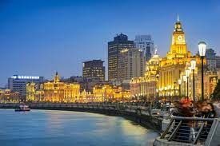
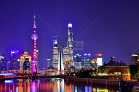
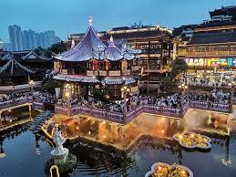
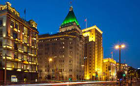

The Bund
The Bund is located on the banks of the Huangpu River in the Huangpu District of Shanghai, a historical and cultural district in China. 1844, the Bund was designated as a British concession area, which became a true depiction of Shanghai's ten-mile foreign court and the starting point of the old Shanghai concession area and the whole modern city of Shanghai. The Bund is 1.5 kilometers long, starting from Yan'an East Road in the south to the Waibaidu Bridge on the Suzhou River in the north, with the Huangpu River in the east and the concentration of financial and foreign trade institutions in Shanghai in the west. In August 1943, the Bund was handed back to the Wang Guomindang government, ending a century-long tenancy period, and in 1945 it was given the official road name Zhongshan Dong Yi. The Bund, with its 52 classical revival buildings in different styles, is known as the Bund's Universal Architecture Exhibition Group, and is one of the most important historical sites and representative buildings of modern China and one of the landmarks of Shanghai, and in November 1996, the State Council of the People's Republic of China listed it as the fourth batch of national key cultural relics protection units. The Bund is an area in the center of Shanghai, consisting of a stretch of road along the Huangpu River and the buildings and facilities along it, and is one of the important landmarks of Shanghai. The Bund is home to more than twenty historic buildings of various styles, from eclectic to Renaissance to early modern, and is therefore known as the "Universal Architecture Complex".
Oriental Pearl Tower
Located on the banks of the Huangpu River in Shanghai and at the tip of Lujiazui in Pudong, the Oriental Pearl Radio and Television Tower is the tallest tower in Asia and the third tallest in the world with its absolute height of 468 meters. The Oriental Pearl Tower stands out from the modern buildings in the Lujiazui area, reflecting the spectacular view of the international metropolis with the Bund's Universal Architecture Exhibition across the river. The futuristic building in Lujiazui, Pudong, Shanghai, China, across the Huangpu River from the Bund, was formerly known as the Shanghai Radio and Television Tower, and is often referred to as the Oriental Pearl by Shanghai residents. Designed by the East China Architectural Design and Research Institute, construction of the Oriental Pearl began on July 30, 1991 and was completed on November 18, 1994, with a total height of 468 meters. From 1994 to 2007, it was the tallest building in mainland China, surpassed in 2007 by the Shanghai World Financial Center. Since its completion, the Oriental Pearl has become one of the components of the Shanghai skyline, a landmark in Shanghai, and a national 5A tourist attraction in China. It integrates broadcasting and television transmission, entertainment and sightseeing. It is a comprehensive tourist and cultural attraction integrating sightseeing, dining, shopping, entertainment, cruise, convention and exhibition, historical display, broadcasting and television transmission and other multi-functional attractions.
Yu Garden
Yuyuan Garden is a classical garden built during the Ming Dynasty, located in the Huangpu District of Shanghai, China, in the northeast of the former Shanghai Old City Hall, with Fuyu Road to the north, Anren Street to the east, and Chenghuang Temple and Yuyuan Mall to the southwest. Built in 1559, Yuyuan Garden was originally the private garden of Pan Yunduan, the minister of Sichuan Province, who built it to "delight the old relatives", and "delight" and "Yu" mean the same thing. This is why it was named Yuyuan Garden. Since then, the garden has been in the hands of many people and has suffered the ravages of many wars. Today it is a typical Jiangnan garden and has become a tourist attraction in Shanghai. In 1959, it was declared a protected cultural heritage unit in Shanghai, opened to the public in 1961, and was listed as a national key cultural heritage unit by the State Council in 1982. Inside the garden are the Jade Linglong, one of the three most famous stones in Jiangnan, and the Point Spring Hall, the former command post of the Little Knife Society uprising. On the side of the garden, there are also tourist attractions such as the City God Temple and the Shopping Street. Nearby are several famous restaurants, including Nanxiang Steamed Bun Shop, which specializes in steamed buns, Ningbo Soup Dumpling Shop, Green Wave Gallery and Shanghai Old Restaurant. There are four scenic spots in Yuyuan Garden: Western, Eastern, Central and Inner Garden. In the western part, there are famous scenery such as Sansui Hall, Yangshan Hall, Duchun Hall, the big rockery and the iron lion of Yuan Dynasty. Sansui Hall was built during the construction of the West Garden and was a place for official celebrations and "preaching of the holy word" in the Qing Dynasty. The Great Wigwam is the oldest and largest surviving yellow stone wigwam in Jiangnan area, designed by Zhang Nanyang. The mountain is about 14 meters high and was called "steep and pleasant to watch" by Zhou Yunduan. In the eastern part of the scenic spot, there are the Jade Linglong, one of the three famous stones in Jiangnan, the Jade Water Gallery and the Huijing Building. In the central scenic area, there are landscapes such as the Moon Building, the Weaving Pavilion, and the Wunyun Rockery. The inner garden scenic area is connected with Yuyuan Garden during restoration, so it can be called the "garden of gardens", which is only two acres and one minute and eighty-six millimeters large, pocket-sized but very delicate. The inner garden scenic area includes the ancient theater, Nine Dragons Pond, Guantao Building and other landscapes. Among them, the ancient theater was originally located in the Zhabei Shanghai North Money Industry Office, and then moved to here in the repair. The Nine Dragons Pond is named after the reflection of four stone dragon heads in the water and the body of the pond shaped like a dragon hidden in the gap between the two walls of the east and west.
Peace Hotel
Peace Hotel is a hotel located at the intersection of East Nanjing Road and the Bund in Shanghai, consisting of two historic buildings, the South Building and the North Building, which was named "World's Most Famous Hotel" for four consecutive years from 1991 to 1994, and remains the only hotel in China to be named a World Famous Hotel. One of the special features of the Peace Hotel Shanghai is the nine country suites, each of which is architecturally designed in nine different countries. In addition, the Peace Hotel Senior Jazz Bar is one of the most prestigious jazz bands in Shanghai. Founded in 1980, it is organized by seven senior citizens over 75 years old and plays European and American jazz hits from the 1930s and 1940s every night. During the time of the Peace Hotel, Queen Elizabeth II, former French Prime Minister François Mitterrand, former U.S. Presidents Ronald Reagan, Bill Clinton, George W. Bush, former Olympic Committee President Samaranch, and Brazilian President Lula have all visited, dined, or stayed at the hotel. In October 1998, the second cross-strait "Wang Koo talks" were held here, and in 2001, the APEC meeting was held in Shanghai, and leaders from various countries dined here. The Peace Hotel Shanghai has the Peace Hall for banquets and weddings, which is the largest banquet hall in the hotel and is located on the 8th floor. The hotel also has the Willow Stream Spa and Fitness Center for spa treatments and fitness. In addition, the hotel has six restaurants and bars, such as the Shanghai specialty restaurant Dragon and Phoenix, Jazz Bar, Chinachem Court Western Restaurant and Observation Terrace, Cin Cin Bar, Mal-Li Lounge and Victor Cafe.